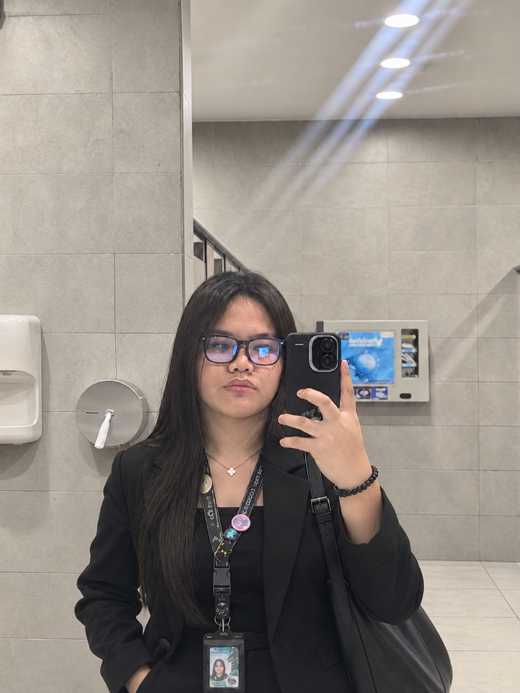

Primary
Luzung Sur Integrated School
Luzong Sur, Bangar, La Union
2016-2019

Magpali, Wintonia Nazarene M.Accent colour
Personal Information
Who I am, what I love, and what I dream about.
I am a hardworking and friendly person who believes every day is a chance to learn something new. I enjoy school, especially subjects that let me be creative and think deeply.
Outside of class, you can find me reading, watching movies, listening to music, or spending time with my family and friends. I like trying new hobbies and sharing what I learn with others.
Primary
Luzong Sur, Bangar, La Union
2016-2019
Junior High School
Poblacion, Bani, Pangasinan
2021-2022
Junior High School
Asingan, Pangasinan
2022-2024
Senior High School
Technical Vocational Livelihood (HE) Tourism
Poblacion, Bani, Pangasinan
2025-2026
Stories, comics, and anything that makes me think.
Movies, shows, videos I enjoy in my free time, and watching on YouTube how to do in programming.
Listening to my favourite songs when I need to relax or focus.
Learning how websites and apps are made — like this one!
My dream is to finish my studies, build a career I am proud of, give back to my parents and my community, and be rich.